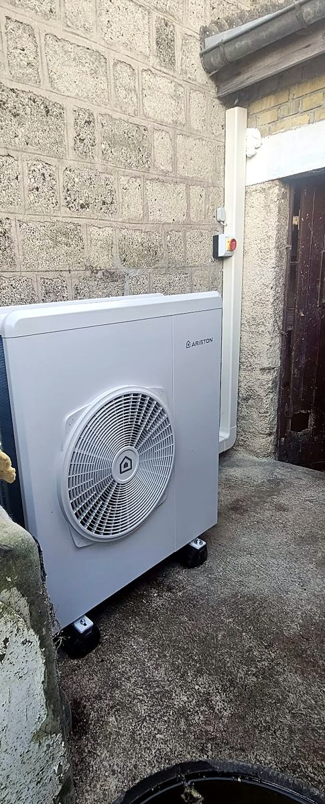
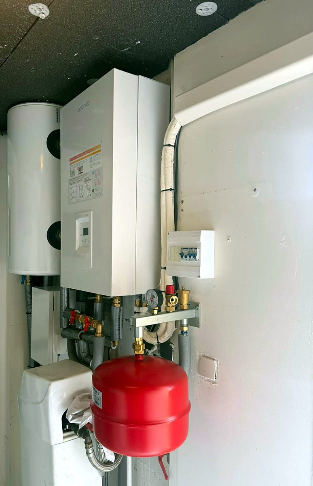
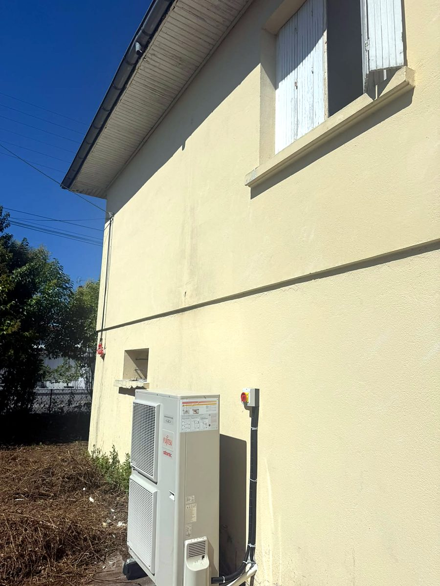
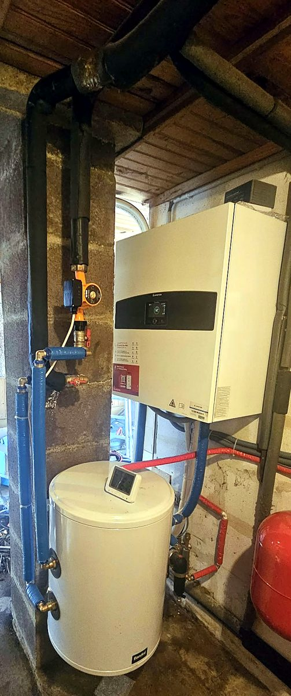
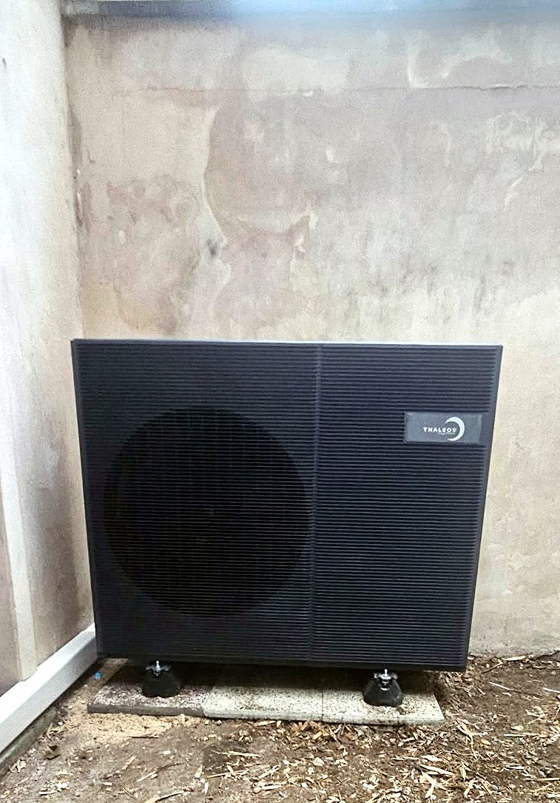
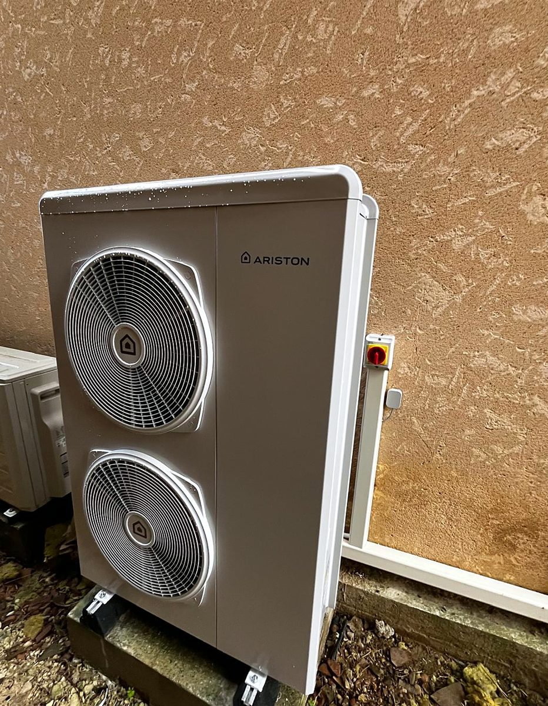
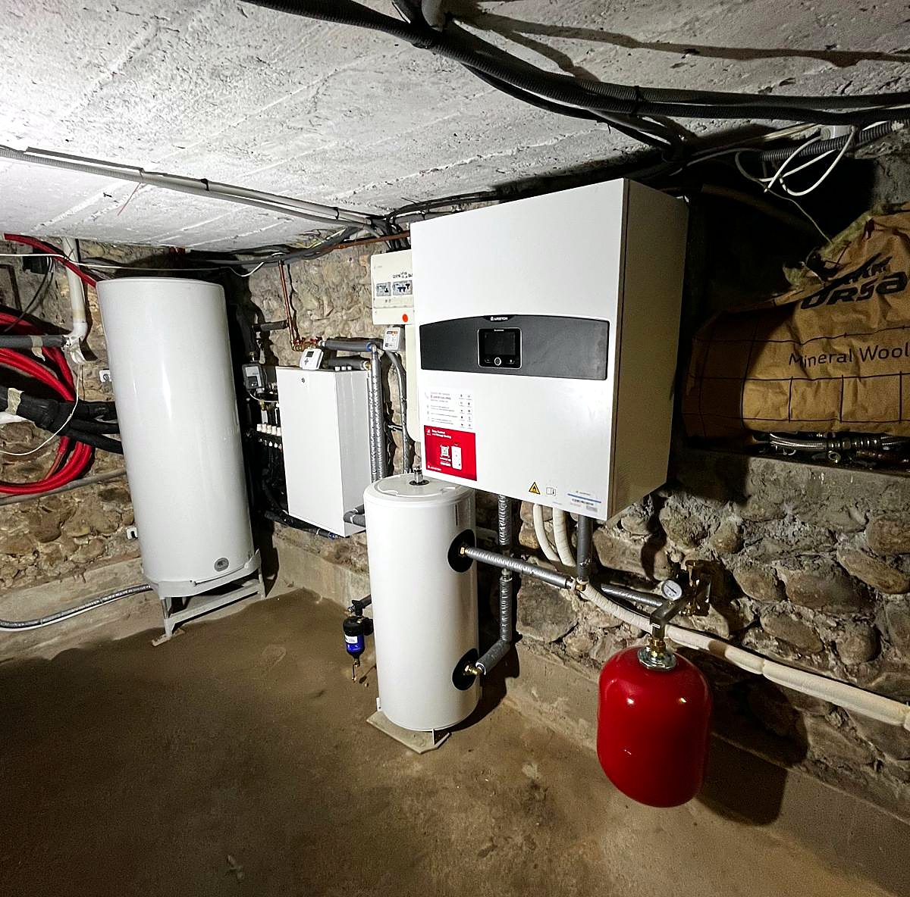
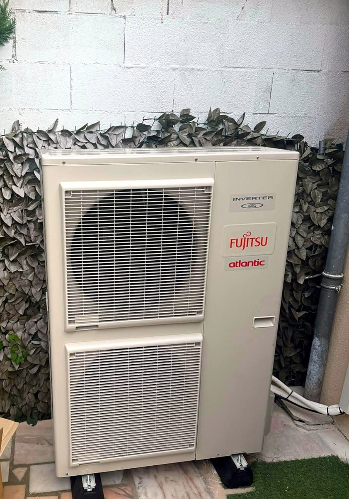
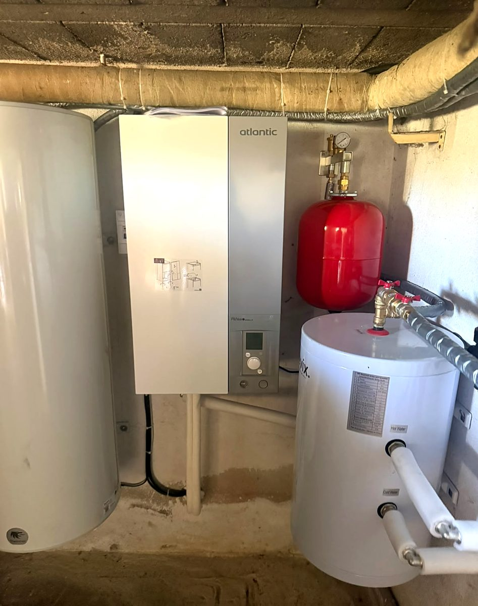

Installateur certifié RGE QualiPAC, partout en France métropolitaine
Passez à la pompe à chaleur. Prime CEE déduite du devis.
Fioul, gaz ou vieille chaudière : votre pompe à chaleur est posée en 1 à 2 jours de chantier et nous montons vos dossiers d'aides. Un seul interlocuteur, de l'étude à la mise en service. Prime CEE sous conditions d'éligibilité.
- Prime CEE déduite du devis, dossier MaPrimeRénov' monté pour vous
- Vous choisissez l'heure de notre appel : pas de relances à n'importe quelle heure
- Étude, visite technique et devis gratuits, sans engagement



Plus de 45 pompes à chaleur installéesVoir les photos de nos chantiersVous préférez parler à quelqu'un ? 09 72 14 91 62
Être rappelé gratuitement
30 secondes : un conseiller vous rappelle au créneau que vous choisissez.
Ou estimez vos aides en 3 minutes avec notre simulateur →
Gratuit et sans engagement. Vos informations ne sont jamais revendues.
RGE QualiPACCertificat n° QPAC/77678, valide jusqu'au 17/06/2027 · Vérifier sur France Rénov' (cherchez ROY CONSULTING, SIRET 881 636 682 00018)
Mandataire MaPrimeRénov'Nous montons votre dossier et vous reversons l'aide
Assurance décennalePolice n° 24115695311
Chantiers sélectionnésNous ne posons que si c'est la bonne solution
La prime CEE déduite de votre devis
Vous réglez votre installation, prime CEE déduite. MaPrimeRénov' est versée par l'Anah après les travaux : mandataire, nous montons votre dossier et nous vous la reversons intégralement dès que nous la recevons.
Seul face aux aides
- Vous avancez la prime CEE puis attendez son versement
- Vous montez seul les dossiers Anah et CEE
- Vous suivez seul leur instruction
- Une pièce manquante et l'aide est bloquée
Avec Eco-Roy
- La prime CEE est déduite du devis
- Nous montons et suivons les dossiers MaPrimeRénov' et CEE
- MaPrimeRénov' vous est reversée intégralement dès réception
- Reste à charge finançable en mensualités
Aides sous réserve d'éligibilité et d'accord de l'Anah et du délégataire CEE. Le reste à charge peut être financé par nos partenaires (Sofinco, Ecair) ou par un éco-prêt à taux zéro auprès de votre banque. Un crédit vous engage et doit être remboursé. Vérifiez vos capacités de remboursement avant de vous engager.
Comment se déroule votre projet
Un seul interlocuteur du premier appel à la mise en service. Nous coordonnons l'Anah, le délégataire CEE et nos poseurs.
Simulation
Quelques questions en ligne sur votre logement et votre foyer : vous connaissez votre profil MaPrimeRénov' et le montant estimé des aides.
Appel et étude technique
Un conseiller vous rappelle au créneau choisi, vérifie votre logement et dimensionne l'équipement. Vous recevez un devis détaillé, prime CEE déduite.
Dossier d'aides
Nous déposons les demandes MaPrimeRénov' et CEE avant les travaux et suivons leur instruction.
Installation et mise en service
Pose en 1 à 2 jours, mise en service, prise en main et remise des documents nécessaires au versement des aides.
Deux aides cumulables en 2026
Pour remplacer une chaudière par une pompe à chaleur air/eau, deux dispositifs publics s'additionnent. Leur montant dépend de vos revenus et de votre logement.
MaPrimeRénov'
Aide de l'État versée par l'Anah aux propriétaires d'un logement de plus de 15 ans. Pour une PAC air/eau, à titre indicatif : jusqu'à 5 000 € pour un ménage bleu, 4 000 € jaune, 3 000 € violet. Les ménages roses n'y ont pas droit pour ce seul équipement.
Prime CEE
Financée par les fournisseurs d'énergie, accessible à tous les ménages quels que soient leurs revenus, avec des montants plus élevés pour les ménages modestes.
Estimations indicatives, sous réserve d'éligibilité et de l'instruction du dossier. Barèmes au 1er janvier 2026, susceptibles d'évoluer.
Nos solutions
La pompe à chaleur est notre métier. Selon votre logement, une autre solution peut être plus adaptée : nous vous le disons.
Nos derniers chantiers
Plus de 45 pompes à chaleur installées : unité extérieure sur plots, module intérieur, ballon et raccordements soignés.
Marques que nous installons : Atlantic · Ariston · LG · Intuis · Thaleos






Nous choisissons nos chantiers
Nous n'installons pas chez tout le monde. Si la pompe à chaleur n'est pas la bonne solution pour votre logement, nous vous le disons, même si cela veut dire ne pas signer. Notre objectif est un client satisfait, pas un chantier de plus.
- Étude honnêteDimensionnement calculé pour votre maison, pas pour notre catalogue.
- Prix clairUn devis détaillé : prix, prime CEE déduite et reste à charge, sans surprise.
- Pas de harcèlementVous choisissez le créneau de notre appel. Vos coordonnées ne sont jamais revendues.
Partout en France métropolitaine
Nous intervenons dans toute la France métropolitaine. Quelques départements où nous installons régulièrement :
Les dernières actualités
Aides, primes CEE, nouvelles pompes à chaleur : ce qui change pour votre projet. Toutes les actualités
Questions fréquentes
Dois-je avancer le montant des aides ?
Pas pour la prime CEE : avec notre délégataire, son montant est déduit directement de votre devis. Pour MaPrimeRénov', nous montons et suivons votre dossier en tant que mandataire ; l'aide n'est pas déduite du devis : l'Anah la verse après les travaux et nous vous la reversons intégralement dès réception. Les aides restent soumises à l'accord de l'Anah et du délégataire.
Combien de temps faut-il attendre MaPrimeRénov' ?
Vous réglez votre installation, prime CEE déduite. MaPrimeRénov' est versée par l'Anah après les travaux ; nous vous la reversons intégralement dès que nous la recevons. Les travaux peuvent démarrer une fois la demande déposée et les délais légaux respectés (notamment le délai de rétractation de 14 jours après signature du devis).
Comment financer mon reste à charge ?
Selon votre situation : paiement comptant, crédit travaux en mensualités avec nos partenaires Sofinco ou Ecair (sous réserve d'acceptation), ou éco-prêt à taux zéro auprès de votre banque. Un crédit vous engage et doit être remboursé. Vérifiez vos capacités de remboursement avant de vous engager.
Qui réalise les travaux ?
La pose est réalisée par des entreprises partenaires qualifiées RGE, sous la responsabilité d'Eco-Roy (ROY CONSULTING), entreprise certifiée RGE QualiPAC et titulaire d'une assurance décennale. Avant la signature, votre devis indique le nom de l'entreprise qui intervient chez vous et sa qualification RGE. Eco-Roy reste votre seul interlocuteur.
L'étude et le devis sont-ils gratuits ?
Oui. La simulation en ligne, l'appel de qualification, la visite technique et le devis sont gratuits et sans engagement.
Ma maison est-elle adaptée à une pompe à chaleur air/eau ?
Une PAC air/eau remplace une chaudière et alimente un circuit de chauffage à eau : radiateurs ou plancher chauffant. Si votre logement est chauffé au gaz, au fioul ou au bois avec des radiateurs à eau, c'est en général une bonne candidate. Si vous êtes chauffé avec des radiateurs électriques, il n'y a pas de circuit d'eau : un ballon thermodynamique est souvent plus pertinent. La visite technique permet de le confirmer.
Quel sera mon reste à charge ?
Il dépend du prix de l'installation retenue, de vos revenus, de la composition de votre foyer et de votre lieu de résidence. MaPrimeRénov' et la prime CEE réduisent le reste à charge, mais nous ne promettons jamais un montant garanti avant l'instruction du dossier. Le devis détaille le prix, les aides estimées et ce qu'il vous reste à payer.
Qu'est-ce qu'un mandataire MaPrimeRénov' ?
C'est une entreprise que vous désignez sur votre compte MaPrimeRénov' pour vous accompagner. En tant que mandataire, Eco-Roy monte le dossier avec vous et suit son instruction auprès de l'Anah. L'aide nous est versée et nous vous la reversons intégralement dès réception.
Combien de temps dure l'installation ?
La pose d'une pompe à chaleur air/eau prend en général 1 à 2 jours sur place : dépose de l'ancienne chaudière, installation de l'unité extérieure et du module intérieur, raccordements, mise en service et explications sur le réglage.
Que devient mon ancienne chaudière ?
Dans la plupart des projets, la pompe à chaleur la remplace : l'ancienne chaudière est déposée. Certaines primes CEE sont d'ailleurs conditionnées au remplacement d'un équipement au fioul, au gaz ou au charbon. Pour une chaudière au fioul, la cuve doit aussi être neutralisée ou retirée : nous vous expliquons les démarches.
Une PAC doit-elle être entretenue ?
Oui. L'entretien d'une pompe à chaleur de 4 à 70 kW est obligatoire tous les 2 ans. Il permet de vérifier le circuit frigorifique, le bon fonctionnement de l'unité extérieure et les réglages, et de conserver de bonnes performances.
Combien d'aides pour votre logement ?
Trois minutes de questions, une estimation immédiate, puis un conseiller vous rappelle au créneau de votre choix.